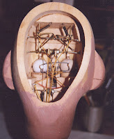

Carving a puppet head
2/24/2009
Question: Hi Clinton. I am progressing well with the Course and would like to start making a
puppet. I have been doing wood carving for years and would like to carve a head out of basswood, but can't find any plans. Is a carved head cut from one piece or is it built up from rough shaped planks like the hull of a sailing ship? Rob
* * * * * *
Answer: I have never carved a vent figure's head from wood. But I have worked on many carved by various figure makers. All I have handled were made of boards laminated together, as you suggest. I found a file photo of a basswood head made by Lovik. If you study it closely, you will see at least three thicknesses of boards. While I do not know the technique, you can also see that center circles of varying sizes were cut from the boards prior to gluing them together, thus creating a rough hollow head even prior to carving the outer features (using a duplicarver). I've always considered wood carving and figure making two separate skills. If you know woodcarving, you have one important skill mastered. The mechanical aspect of a vent figure is pretty much the same, regardless of the materials from which the head is made. One such plan is Make Your Own Dummy by William Andersen. Clinton
puppet. I have been doing wood carving for years and would like to carve a head out of basswood, but can't find any plans. Is a carved head cut from one piece or is it built up from rough shaped planks like the hull of a sailing ship? Rob
* * * * * *
{kind=link}

Answer: I have never carved a vent figure's head from wood. But I have worked on many carved by various figure makers. All I have handled were made of boards laminated together, as you suggest. I found a file photo of a basswood head made by Lovik. If you study it closely, you will see at least three thicknesses of boards. While I do not know the technique, you can also see that center circles of varying sizes were cut from the boards prior to gluing them together, thus creating a rough hollow head even prior to carving the outer features (using a duplicarver). I've always considered wood carving and figure making two separate skills. If you know woodcarving, you have one important skill mastered. The mechanical aspect of a vent figure is pretty much the same, regardless of the materials from which the head is made. One such plan is Make Your Own Dummy by William Andersen. Clinton